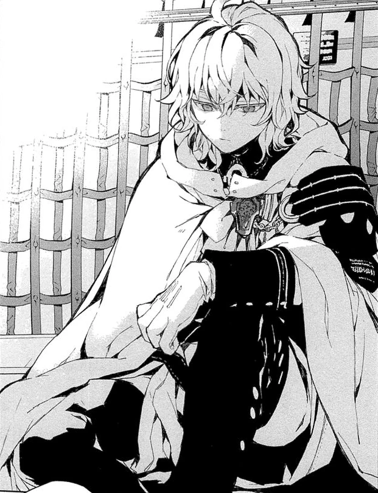

Mikaela Hyakuya
Mikaela Hyakuya (百夜 ミカエラ, Hyakuya Mikaera) nacido como Mikaela Shindō (進藤 ミカエラ Shindō Mikaera) es el deuteragonista la historia de Owari no Seraph.
Fue convertido en un vampiro en contra de su voluntad por la tercera progenitora Krul Tepes. Junto con Yūichirō y algunos otros, es poseedor del gen del serafín.
También protagoniza las novelas de "Owari no Seraph: La Historia del vampiro Michaela" y aparece en la novelas ligeras "Owari no Seraph: Guren Ichonose: Catástrofe a los dieciséis."
Apariencia
Mika tiene el cabello rubio, medio largo y algo despeinado. Sus ojos son azules, aunque despues se vuelven rojos (al tomar sangre directamente). Luego de convertirse en un vampiro, le aparecieron colmillos como a todos los vampiros, pero sus ojos se han mantenido azul ya que aún no ha bebido sangre humana. Su pelo esconde sus oídos, por lo que se desconoce si sus orejas son puntiagudas o no. Llevo el uniforme estandar del ganado anteriormente, cuando era humano. Como guardia de la ciudad, tambien lleva el uniforme estándar como otros soldados, con botas de llegar hasta sus muslos y guantes blancos como complemento. Él tiene una decoración de oro en el frente con gemas azules y un par de correas alrededor de sus caderas, que forman una X.
Su segundo uniforme es el mismo que Lacus y René. También lleva dos cintas que se encuentran en su cadera derecha, y sus botas que llegan hasta sus muslos además de seguir acompañando el uniforme con sus guantes blancos. Este equipo es más ceñido al cuerpo. Sus hombros y cuello tienen numerosas correas atándolos juntos, y un collar negro los mantiene a su cuello. Él tiene una capa blanca que llega a sus muslos.
Más adelante en el manga su uniforme es cambiado a uno similar al que usa al inicio solo que con una capa de lado izquierdo sujetada con una correa, sus botas largas hasta los muslos y sus ya típicos guantes blancos, este atuendo se asemeja a la vestimenta de un noble.
Al concluir el contrato con Yuichiro, Mika tiene cuernos puntiagudos que aparecen en su cabello donde también son visibles sus orejas de vampiro. Su ropa es muy diferente, Mika usa una parka sin mangas de color oscuro como una chaqueta. Esto tiene un espacio que muestra en parte el centro de su pecho, con su cuello también visible debido al cuello levantado. Alrededor de sus hombros hay un pelaje negro considerable como un borde. Una correa en la que la línea central es de color claro, con líneas negras a cada lado forma un patrón en el pecho. Hay una sola banda de diseño similar alrededor del bíceps de Mika. También usa guantes sin dedos de color oscuro. Se conserva el mechón circular como la cola que el demonio Mika tenía cuando era niño. En la espalda de Mika hay una capa de color más claro, que tiene degradados de color, más oscuro en la parte superior, que se vuelve más claro a medida que avanza hacia abajo. Esto se usa sobre la espalda de Mika. El largo coincide con el de la chaqueta donde ambos terminan en sus muslos. La cola puede aparecer a través de una raya en el medio de la capa, que está algo rota en los extremos. En la portada a color del capítulo 111, a diferencia de los otros demonios, Mika se muestra con ojos azules, los mismos que tenía cuando era humano.

Página creeada por Valentina Vargas Sánchez